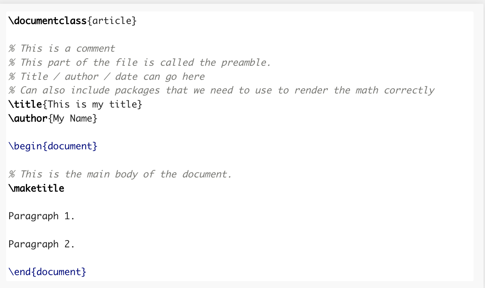
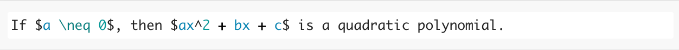

For written homework assignments, students will need to use either a scanner app or a scanner to create a single PDF of all their work and upload the work to Brightspace. There are several good scanner apps available for Android and iOS devices, my favorite is CamScanner (Android / iOS).
Have you ever wondered how mathematical articles are typed? We do not have symbols on the keyboard for things like exponents, so \(x^2\) might not be so easy to write. The letter \(\pi\) will certainly not appear on your keyboard, either, and good luck finding the symbol for \(\int\).
The answer is called LaTeX. LaTeX is a markup language used to typeset academic articles. Academic articles are not written in Microsoft Word or Google Docs: while you can get them to understand mathematical equations, it is not standard and somewhat clunky. LaTeX is the standard. The pronunciation of Latex as "Latec" is due to the origin of the word. It comes from the Greek word "látex" which is pronounced with a hard "c" sound. As the word entered the English language, the pronunciation was kept consistent with its original form.
There are several ways to set up and install LaTeX. If you prefer not to install anything on your local computer, you can create a free account on Overleaf.com. This is the simplest way to get up and running.
If you prefer to use LaTeX on your own computer, you will need two things:
A LaTeX distribution: either MacTex, on Mac OS X, or MikTex for Windows.
A LaTeX editor: my preference is TeXstudio. MikTex and MacTex both come with LaTeX editors, and so you can use those if you like (MikTex comes with TeXworks, MacTex comes with TeXShop), though I prefer TeXstudio.
Once you have written your document in LaTeX, saved as a .tex file, you will be able to compile it to a PDF.
A simple LaTeX file may look something like:

It can be overwhelming to start a LaTeX document from scratch, so feel free to use the homework files I post to start. I include several packages, macros,and definitions in my preamble.
To format math in a LaTeX file, you use dollar signs to start and end your mathematical notations. Technically this is referred to as “in-line” math mode: for example, to write the sentence “If \(a \neq 0\), then \(ax^2 + bx + c\) is a quadratic polynomial”, you use the following LaTeX syntax:

This is “in-line”, since the math is formatted in the middle of the sentence. There is also “displayed” math mode: you can use two dollar signs ($$) to start and end, and that will display the mathematical content on its own line.
As you can see, there are certain commands we use to put in mathematical notation. For exponents / superscripts we use the caret symbol ( \(\widehat{}\) ) etc. There are many good guides to finding basic LaTeX commands for mathematical notation, you can find them below.
These first two are essential: you must check these out.
NYU: Guide to LaTeX. This link is quite thorough and has many other links to other resources to help you get set up. The resources section on the site has lots of good links to finding LaTeX commands and symbols.
David Xiao, “A Beginner’s Guide to LaTeX” (Princeton) This is a short (6 page) description of the basics of LaTeX.
The Not So Short Introduction to LaTeX 2e. This 150+ page reference manual describes many of the core functionalities of LaTeX.
You can use your friend Google to ask LaTeX questions or create a free account at LaTex Stack Exchange